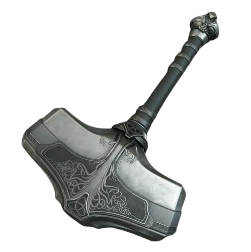
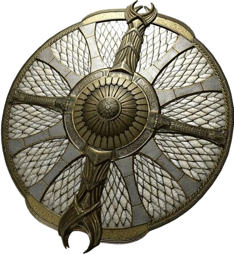
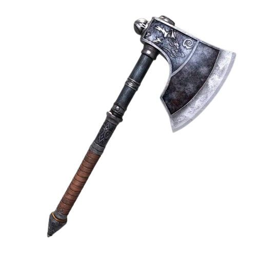

Paulo

Identidade
- Interpretado: Mestre
- Raça: Humano
- Nivel: 8
- Idade: 43
- Altura: 1,95
- Classe: Guerreiro Arcano
- Antecedência: Soldado
- Associação: Guilda Fogo Eterno
- Hobbs: Ler, e descobrir mais sobre os demônios.
- Personalidade: Alegre, determinado e sociável
Historia
Paulo Envyn, nascido no reino de flores, um reino relativamente pobre, cresceu com o sonho de ajudar e proteger os outros ao seu redor, mesmo saindo machucado, ele acreditava q todo sacrifício valia a pena se fosse para salvar um igual.Ao completar 15 anos, entrou para uma academia de cavaleiros na capital dos 4 trevos, desenvolvendo e aprendendo novas habilidades, sempre animado e perseverante, conseguiu amizades, inimigos, rivais e ate um amor, Olivia, uma elfa de cabelos dourados, que fez parte de sua vida por 5 anos. Infelizmente, essa vida tranquila não por muito tempo, num dia nublado, a parte oeste, onde paulo morava com sua amada, foi atacada por demônios que vinheram do céu, tudo foi devastado, paulo, que estava em serviço, foi rapidamente junto de outros guardas ate o local, eles lutaram, bravamente, perderam inúmeras vidas no processo,quando tudo acabou, paulo correu, desesperado, com medo, angustia, ele vai ate sua casa, ele vê tudo destruído, ele procura por Olivia, só para encontrá-la em pedaços, despedaçada, ele chora, de tristeza e raiva por não ter chegado a tempo, ele se culpa, ele culpa os demônios, ele se levanta, e vai em busca de acabar com isso, ele se demite do cargo de cavaleiro, e parte numa aventura para acabar com a nova era demoníaca.
Aparencia
Cabelo: Cabelos curtos e loiros, penteados para o lado com um visual prático. A barba, bem aparada e com formato quadrado, reforça sua aparência madura e determinada.
Expressão: Seu rosto transmite segurança e seriedade, mas também uma leve simpatia — como alguém confiável e respeitado por seus aliados.
Armadura: Usa umaN/A armadura pesada nos ombros e braços, feita de metal e couro, evidenciando que está preparado para combates intensos.
Roupa: Por baixo da armadura, veste uma túnica laranja com detalhes brancos e um forro de pele clara no colarinho
Status e aptidões
-
Vida [89]
-
Defesa [20]
-
força [+7]
-
destreza [0]
-
constituição [+6]
-
inteligencia [+2]
-
sabedoria [+2]
-
carisma [+2]
Raça:Humano
Aumento no Valor de Habilidade. Todos os
valores de habilidade aumentam em 1.
Deslocamento base de caminhada
é 9 metros.
Classe :Cavaleiro Arcano
O arquétipo de Cavaleiro Arcano combina a maestria marcial comum a todos os guerreiros, com um cuidadoso estudo de magia. Os cavaleiros arcanos usam técnicas mágicas similares as praticadas pelos magos. Eles focam seu estudo em duas das oito escolas: abjuração e evocação. As magia de abjuração concedem proteção adicional em batalha ao Cavaleiro Arcano, e as magias de evocação causam dano a vários oponentes de uma vez, estendendo o alcance do guerreiro em combate. Esses cavaleiros aprendem, comparativamente, um pequeno número de magias, guardando-as na memória ao invés de mantê-las em um grimório
Estilo de luta: Proteção
Quando uma criatura que você possa ver atacar um alvo
que esteja a até 1,5 metro de você, você pode usar sua
reação para impor desvantagem na jogada de ataque da
criatura.
Você deve estar empunhando um escudo.
Armas
| Arma | Descrição |
|---|---|
|

valhalla |
um malho(martelo)
dano: 2d6+for. |
|

Arc |
um escudo detalhado feito uma mistura de matais
+2 na defesa. |
|

Machadinha |
machadinho(um machado com cabo encurtado)
dano: 1d6+for. |
Magias
Truques
- Truque 1: Proteção contra Laminas, Sempre que uma criatura faz uma jogada de ataque contra você antes que a magia termine, o atacante subtrai 1d4 da jogada de ataque.
- Truque 2: Raio De Fogo , Você arremessa um cisco de fogo em uma criatura ou objeto dentro do alcance. Faça um ataque à distância com magia contra o alvo. Se atingir, o alvo sofre 1d10 de dano de fogo. Um objeto inflamável atingido por essa magia incendeia se não estiver sendo vestido ou carregado.
- Truque 3: N/A
- Truque 4: N/A
- Truque 5: N/A
Magias 1
- Magia 1: Escudo Arcano , Uma barreira de energia invisível aparece e protege você. Até o início do seu próximo turno, você recebe +5 de bônus na CA, incluindo contra o ataque que desencadeou a magia, e você não sofre dano de mísseis mágicos.
- Magia 2: Mãos Flamejantes , Conforme você segura suas mãos com os polegares se tocando e os dedos abertos, uma fina camada de chamas emerge das pontas dos seus dedos estendidos. Cada criatura em um cone de 4,5 metros [15-foot cone] deve realizar um teste de resistência de Destreza. Uma criatura sofre 3d6 de dano de fogo se falhar no teste, ou metade desse dano se obtiver sucesso.
- Magia 3: Misseis Magicos , Você cria três dardos brilhantes de energia mística. Cada dardo atinge uma criatura, à sua escolha, que você possa ver, dentro do alcance. Um dardo causa 1d4 + 1 de dano de energia ao alvo. Todos os dardos atingem simultaneamente e você pode direciona-los para atingir uma criatura ou várias.
- Magia 4: N/A
- Magia 5: N/A
Magias 2
- Magia 1: N/A
- Magia 2: N/A
- Magia 3: N/A
- Magia 4: N/A
- Magia 5: N/A
Magias 3
- Magia 1: N/A
- Magia 2: N/A
- Magia 3: N/A
- Magia 4: N/A
- Magia 5: N/A
Magias 4
- Magia 1: N/A
- Magia 2: N/A
- Magia 3: N/A
- Magia 4: N/A
- Magia 5: N/A
Magias 5
- Magia 1: N/A
- Magia 2: N/A
- Magia 3: N/A
- Magia 4: N/A
- Magia 5: N/A
Magias 6
- Magia 1: N/A
- Magia 2: N/A
- Magia 3: N/A
- Magia 4: N/A
- Magia 5: N/A
Magias 7
- Magia 1: N/A
- Magia 2: N/A
- Magia 3: N/A
- Magia 4: N/A
- Magia 5: N/A
Magias 8
- Magia 1: N/A
- Magia 2: N/A
- Magia 3: N/A
- Magia 4: N/A
- Magia 5: N/A
Magias 9
- Magia 1: N/A
- Magia 2: N/A
- Magia 3: N/A
- Magia 4: N/A
- Magia 5: N/A